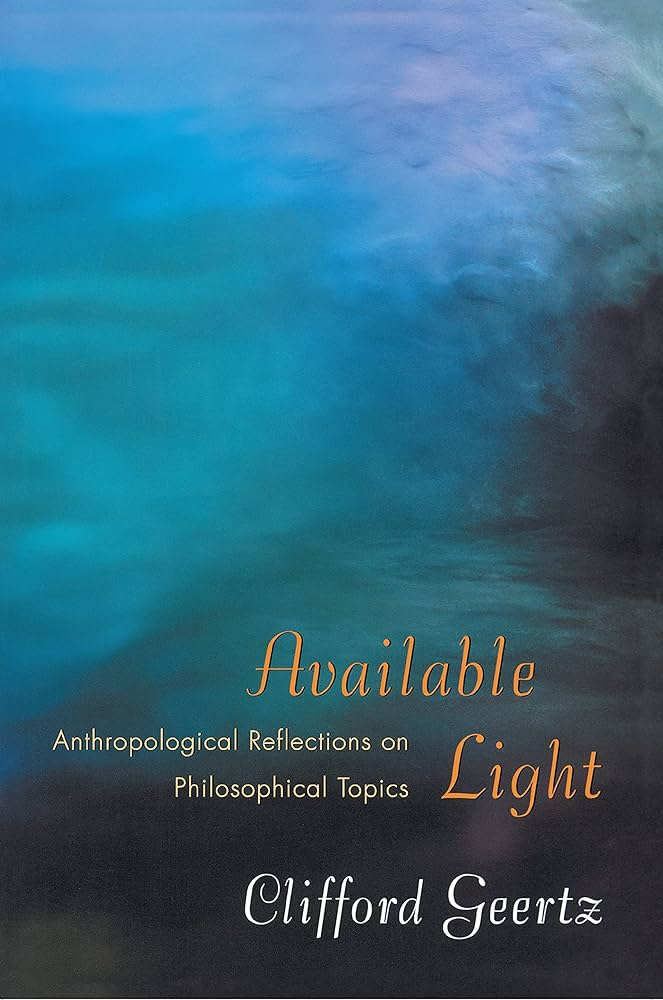
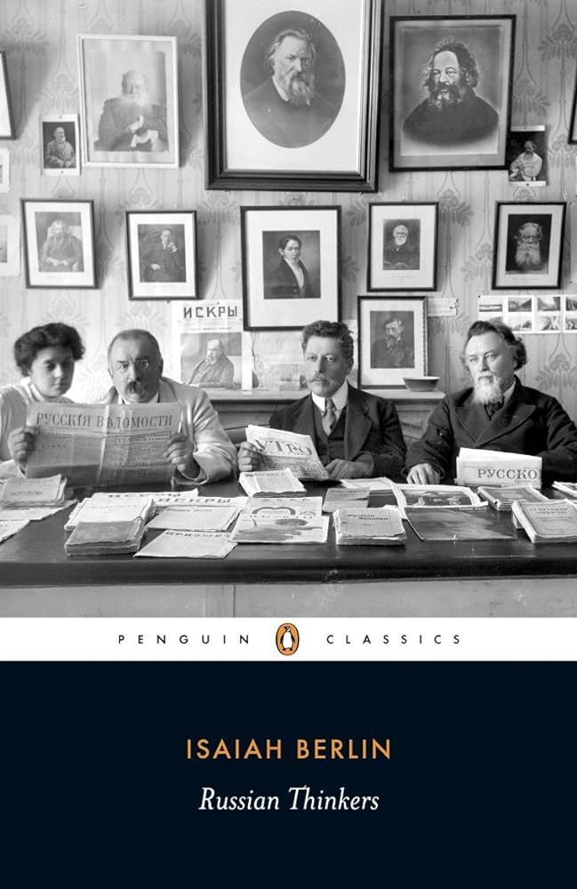
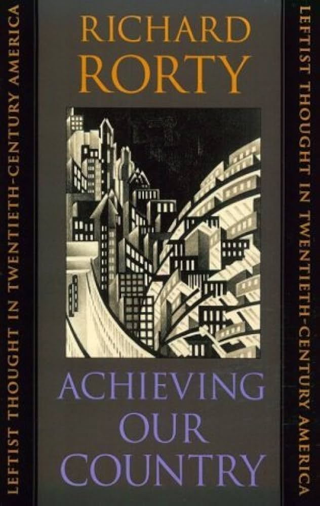
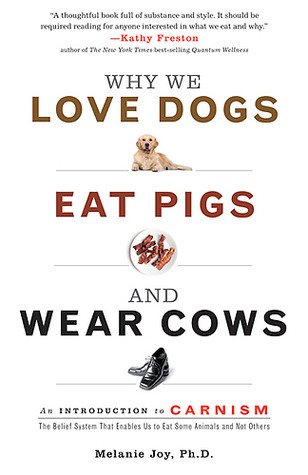
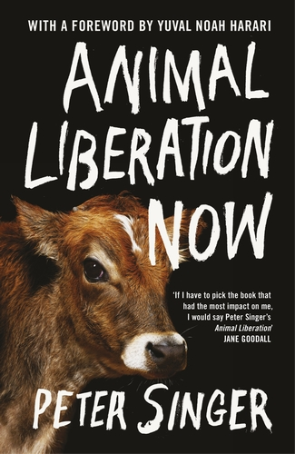
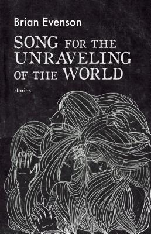
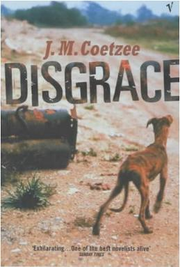
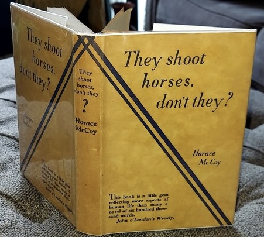

About
About
 Entries
Entries
 Kool Webpages
Kool Webpages
 Guestbook
Guestbook
 Kool Books
Kool Books
 Truth Table
Truth Table
 Contact
Contact
 Chat
Chat

Non-Fiction Books
My Past and Thoughts

800-page memoirs of the 19th century Russian intellectual and revolutionary, Alexander Herzen. It is deeply personable, vibrant with life and history. I have read dozens of memoirs and autobiographies, this one is a literary masterpiece.
More InfoDefying Hitler

Diary written by Sebastian Haffner, a young German Jew, as he watches his country descend into Nazism. The litereary style and writing is particularly brilliant.
More InfoAvailable Light: Anthropological Reflections on Philosophical Topics.
Clifford Geertz doing philosophy, what's not to like? Philosophy of anthropology, anthropology of philosophy? Being a work of *reflection*, Clifford isn’t afraid of going on tangents. Im hesitant to recommend this because a lot of background knolwedge is needed to appreaciate some of the essays. But the literary style makes it accessible to most people.
More InfoRussian Thinkers
Fascinating inights into 19th century Russian Intelligentsia. Was particularly amused on how many of them used literature as a tool for liberation, seeing that it was the only medium available to them for social criticism. Isaiah Berlin, the writer, does a profoundly good job at making such a dense subject extremely entertaining.
More InfoAchieving Our Country: Leftist Thought in Twentieth-Century America
Philosopher Richard Rorty critiques the American Left for straying from its pragmatic roots of hope and inclusive, class-centered patriotism, towards abstract critique and passive cynicism. He reminisces about an earlier Left, aligned with figures like Dewey and Whitman, which championed solidarity and progress. Rorty acknowledges America's dual history of progress and atrocity but sees these as failures of imagination rather than inherent sin, arguing for continued constructive engagement over condemnation. He sees America as an evolving project that should learn from past injustices without being paralyzed by them, urging a move away from theoretical detachment towards active policy-making and reform.
More InfoPhilosophy and Social Hope
Initially drawn to uncovering a universal law to explain historical and political phenomena, I was once captivated by theories suggesting that humans operated under fixed principles. Over time, and influenced by Rorty, my perspective shifted. I came to reject essentialism and foundationalism and embraced a more pluralistic, dynamic understanding of human behaviour. I cam to also recognise language and discourse as central to our interaction with the world.
This book is the best possible introduction to Rorty, clear and digestible philosophy that is relevant to people’s everyday thinking. Rorty's relativistic view, which might unsettle some, resonates deeply with me, as it reveals a world where fixed truths give way to discourse and practical utility. He argues that our beliefs do not mirror reality but are responses to cope with it. This framework dismisses the need for a unified appearance-reality distinction, given that we assess our beliefs based on their usefulness in achieving our goals. In this light, the sciences and religion serve different purposes and need not be reconciled.
What I've learned from Rorty, beyond any previous academic lesson, is the value of reinterpreting our worldviews. He masterfully anticipates and integrates criticism into his philosophy by suggesting that, when foundational truths are contested, what remains is a choice between what serves our ends best. Consider this quote:
”We pragmatists cannot make sense of the idea that we should pursue truth for its own sake. We cannot regard truth as a goal of inquiry. The purpose of inquiry is to achieve agreement among human beings about what to do, to bring about consensus on the ends to be achieved and the means to be used to achieve those ends. Inquiry that does not achieve coordination of behaviour is not inquiry but simply wordplay. To argue for a certain theory about the microstructure of material bodies, or about the proper balance of powers between branches of government, is to argue about what we should do: how we should use the tools at our disposal in order to make technological, or political, progress. So, for pragmatists there is no sharp break between natural science and social science, nor between social science and politics, nor between politics, philosophy and literature. All areas of culture are parts of the same endeavour to make life better.”
More InfoThe Utopia of Rules: On Technology, Stupidity, and the Secret Joys of Bureaucracy
Premise: Paperwork sucks and bureaucracy stifles all creativity, imagination, and innovation. Oh and also there has barely been any technological progressive in the past century. Also capitalism sucks. Also the assumption that capitalism = free market = deregulation = anti-bureaucracy = libertarianism or right wing, is not sound.
Of course the book is much more nuanced and interesting than this straw man version and definitely worth reading.
More InfoThe Social Construction of What?
So, you know how there's always been this big ol' debate between scientists and philosophers about what's real and what's just a social construct? Well, Hacking jumps right into the middle of that mess and starts poking around for some answers. He's got a great way of breaking things down, using anecdotes and analysis to make some pretty complex ideas feel a lot more accessible.
One thing that caught my attention was how he compares this Science Wars business to the old nominalist vs. structuralist debate. Now, I don't want to get too bogged down in the details here, but basically, nominalists think that reality is whatever we say it is, while structuralists believe that there's some deeper truth beneath the surface. Hacking's take is that, yeah, there might be some objectivity to science, but the way we go about figuring out what's true is definitely influenced by society.
What Hacking's trying to do here is get us to think more critically about how we categorize things. He wants us to look beyond the obvious and consider all the social forces that shape our understanding of reality.
Now, I know some people might be thinking, "But wait, isn't this social construction stuff just a bunch of postmodern mumbo-jumbo?" And, honestly, I can see why you might think that. But Hacking's approach is different. He's not trying to tear down the whole system or anything - he just wants us to be more aware of how our beliefs and values influence the way we see the world. The book is a referee's whistle in the culture wars.
More InfoWhy We Love Dogs, Eat Pigs, and Wear Cows
Melanie Joy delves into the psychological and societal mechanisms that lead to selective compassion when it comes to animals. A provocative and enlightening read that questions the ethics and traditions of our food choices.
More InfoAnimal Liberation
Peter Singer's groundbreaking work, 'Animal Liberation', has been a vital force in the animal rights movement. Challenging the ethical foundation of our treatment of animals, it remains a thought-provoking resource on the subject of animal ethics.
More InfoFiction Books
Songs of a Dead Dreamer and Grimscribe
Thomas Ligotti is now mentioned in the same breath among the greats like Poe, Lovecraft, and Kafka. But he's got a pretty unique style that sets him apart, too. In this anthology of 33 stories, is a window into his eerie genius.
Now, I know some people might call his stuff "cosmic horror," but honestly, it's so much more than that. Sure, there's some sci-fi elements and ancient mythology thrown in, but ultimately, Ligotti's work is all about exploring the human condition. And its not always pretty. You need to check this out. Trust me, the writing itself is worth it, even if you're not a fan of the 'weird fiction' genre.
More InfoTeatro Grottesco
Kafka meets Poe, but without the sappy romance. Ligotti's stories are laced with black humour but don't expect to be scared in a traditional way. These tales are quite cerebral, they really dig deep into that grey matter between your ears, and not meant to merely entertain you. His prose, at times wry, pessimistic, or bitingly sarcastic, is nonetheless beautiful. Chef's kiss. More than perfect.
You'll encounter stories that are both metaphorical and allegorical, set in strange towns, surreal scenarios, and the monotonous cruelty of daily life. In short, Ligotti's collection isn't just a bunch of horror stories – it's a reflection on life itself. It's like he's holding up a mirror to society and saying, "Look, this is what we are – deal with it."
More InfoDark Entries
Aickman's stories are super immersive, with a richness that'll suck you right in. But, they're also kinda... weird. Like, you'll be reading along, and suddenly, things get a little (okay, a lot) inexplicable. You'll be left wondering, "Wait, what just happened? Did I miss something?". These aren't your usual bump-in-the-night kind of stories. They're not Steven King type horrors. There's no gore, no cheap scares, and no obvious villains. They're a bit more refined, yet no less chilling for their subtlety. Aickman builds worlds that you feel you know... only to slip through the cracks of reality when you least expect it. So, if you're lookin' for somethin' a little different, a little odd, a little WTF, then this collection is for you.
More InfoSong for the Unraveling of the World
Brian Evenson's collection is totally impossible to pin down. Again this book is like, horror, but not the usual jump-scare stuff. Some of them have aliens and weird shenanigans that feel more at home in sci-fi, but they're not really that either. And the atmosphere is quite uncanny. It's got this timeless, eerie feeling like it's going down in some parallel universe. You're never sure if you're in the past, the future, or some other creepy dimension that's just a stone's throw away from our own. And the details. Evenson doesn't give you everything at once; he drops little breadcrumbs that make your skin crawl and leaves the rest for your brain to trip over later. There's this one story about a girl with no face, or a dude who's convinced he's being watched all the time - it's freaky because you start seeing those things out of the corner of your eye even after you finish the book.
More InfoFevre Dream

A vampire novel by George RR Martin, and not the cheesy 500 year old vampire falling for a highschool girl type (ahem, Twighlight).
More InfoDisgrace
In post-apartheid South Africa, Lurie, a university lecturer, is disgraced for hooking up with his student. He retreats to the country to live with his daughter. There, they experience her gruelling rape. He turns to working in an "Animal Welfare" clinic whose main role is to kill dogs and cats. He takes it upon himself to incinerate the animals himself, to save them from posthumous humiliation. The book is full of allegories, human emotions and insights on the post-apartheid transitory period and shifting racial power dynamics between whites and blacks who both undergo instances of disgrace.
More InfoThey Shoot Horses, Don't They?
Written in 1935, this is an existential novel set during the Great Depression. Gloria Beatty and her boyfriend particpate in a gruelling and long dance marathon contest that drags for weeks, all to win the $1000 prize money or be noticed by studio producers and movie stars. At one point, Gloria asks ”Why are these high-powered scientists always screwing around trying to prolong life instead of finding pleasant ways to end it?”. The novel ends with one of the most bleak questions in all of literature, which is the title of the book. It is meant to depict the helplessness people felt during the Depression, who worked really hard in a rat-race marathon to the top but ended up nowhere.
More Info